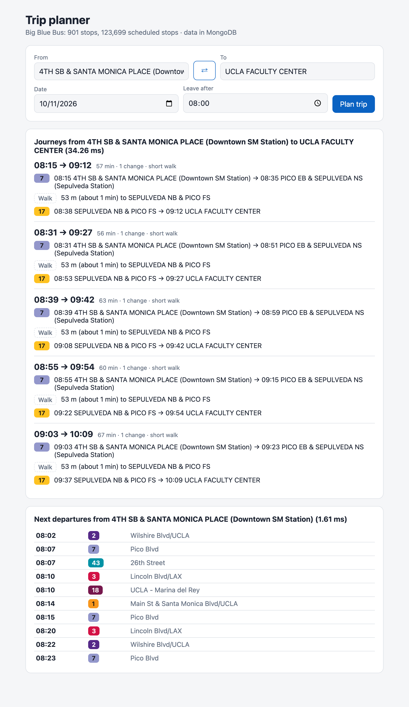
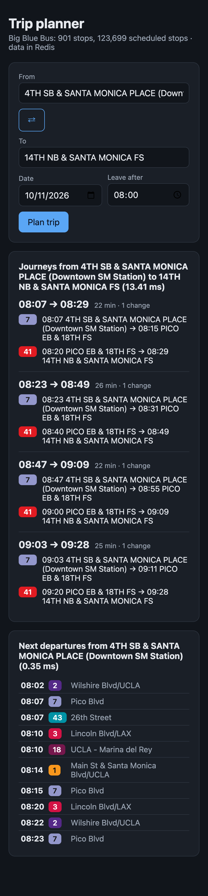

I loaded two real public transport timetables into Redis and MongoDB: Big Blue Bus (Santa Monica, 123,699 scheduled stops) and TriMet (Portland, 3,407,790). Then I ran the questions a trip planner really asks, like "next buses from this stop" and "how do I get from A to B", 2,000 times each on each database. I checked that both databases gave the same answers, and measured speed, memory, throughput and how the results change when the network is 28 times bigger. Finally, I built a small trip-planner web app that runs on either database.
The short answer: Redis was faster on every query on the big network (on the small one, MongoDB won only the name search), and much faster for the full app, because a trip plan makes many small calls. But it keeps everything in RAM, and I had to design every "index" by hand. MongoDB needed only 57% as much space (on disk, versus Redis's RAM), and found the better index by itself. It is also easier to grow beyond one machine. For a large trip-planning service, I would keep the timetable in MongoDB and add Redis as a cache for the hottest answers (section 6).
GTFS (General Transit Feed Specification) is the standard format that transit agencies use to publish their schedules. It began in 2005 as a project between TriMet in Portland (one of my two test feeds) and Google, which is why it was first called the "Google Transit Feed Specification". Today thousands of agencies publish GTFS, and apps like Google Maps and Transit read it.
A GTFS feed is just a ZIP file of CSV text files. Each file is like a table, and they link to each other by ids:
| File | What it holds | Big Blue Bus | TriMet |
|---|---|---|---|
stops.txt | every stop: id, name, latitude, longitude | 901 | 6,031 |
routes.txt | bus or train lines: short name ("7"), long name, type, colour | 17 | 82 |
trips.txt | one journey of a vehicle along a route, with the service (days) it runs | 3,277 | 67,957 |
stop_times.txt | when each trip arrives at and leaves each stop, in order. This is by far the biggest file | 123,699 | 3,407,790 |
calendar.txt, calendar_dates.txt | which days each service runs, plus exceptions (holidays) | 5 and 6 services run on the test day | |
shapes.txt, transfers.txt, fares… | map lines, transfer rules, prices (optional files) | not used here | |
For example, this real row from TriMet's stop_times.txt says that trip 18188725 leaves stop 12845 (Marquam Hill) at 05:30, and it is the 1st stop of that trip:
trip_id,arrival_time,departure_time,stop_id,stop_sequence,stop_headsign,... 18188725,05:30:00,05:30:00,12845,1,Marquam Hill,...
GTFS has a few traps that a trip planner must handle (my tests check all of them):
25:10:00, so I store times as "seconds since midnight", not as clock times.Almost every feature of a journey planner is a question about these files:
stops.txt.stop_times for one stop, sorted by time, keeping only the services that run today.shapes.txt), fares, accessibility (wheelchair_boarding), and live delays from the companion format GTFS-Realtime.A traditional SQL database (MySQL, PostgreSQL) stores data in tables with a fixed schema, links them with foreign keys and joins, and is queried with SQL. Redis and MongoDB are both "NoSQL", but they are very different from each other:
ZRANGE or GEOSEARCH on one key at a time, so you design the keys around the questions you will ask.$lookup exists) and without a fixed schema.| Redis 8.10.2 | MongoDB 8.2.6 | |
|---|---|---|
| Data model | keys → data structures (hash, sorted set, geo…) | collections of documents (BSON) |
| Where data lives | all in RAM; optional snapshots (RDB) or a log (AOF) on disk | on disk (WiredTiger, compressed), hot data cached in RAM |
| Querying | commands on one key; logic in the application | query language, indexes chosen by a query planner, aggregation |
| Geo | GEOADD/GEOSEARCH (a sorted set with geohash scores) | GeoJSON + 2dsphere index, $near, $geoNear |
| Scaling out | Redis Cluster: 16,384 hash slots spread over nodes; replicas | replica sets; sharding by a shard key |
| Typical role | cache, sessions, leaderboards, queues, real-time counters | main application database |
2dsphere), text, and a query planner that picks the best index.$geoNear, $lookup), transactions, change streams.| Criterion | How I measured it |
|---|---|
| Correctness | Every one of the 12,000 test queries per feed ran on both databases and the answers were compared. A fast wrong answer is worthless, so I checked this first. I also wrote 20 tests with known answers (loops, after-midnight times, holidays). |
| Ingestion speed | Time to load the whole feed (and build MongoDB's indexes), median of 3 runs from an empty database. |
| Memory / storage | Redis MEMORY STATS; MongoDB dbStats after an fsync (data size, on-disk size, index size). |
| Query latency | 6 trip-planning queries, 2,000 different realistic inputs each (after 200 warm-up queries), median (p50), 95th and 99th percentiles. |
| Throughput | A realistic mix (35% departure boards, 20% nearby stops, 20% A → B…), 6,000 operations with 1, 8, 32 and 128 users at once. |
| Scalability | The same tests on a small (124K rows) and a large (3.4M rows) real network. |
| Whole application | Time to plan a full journey with my trip planner (about 30 database calls), for 300 random journeys per feed. |
| Ease of use | Code size, what I had to build by hand, and how each database reacted when I changed the data layout. |
Generic benchmarks ("how many GET/SET per second") don't tell you how your app will behave, because the speed depends on the data model and the query pattern. My own results show this three times:
So I used real feeds, real questions, and compared the answers, not just the speed.
The same pipeline feeds both databases, so the comparison is fair: download the ZIP → parse the CSV files as a stream (the TriMet stop_times.txt has 3.4 million lines) → transform (times to seconds, skip invalid stops, copy service_id and route_id next to each stop time) → load in big batches. Parsing took 14.2 s for TriMet and is not counted below.
stop:{id} HASH name, code, lat, lon
stops:geo GEO position of every stop
stops:names ZSET name words, for search
route:{id} HASH short/long name, colour
trip:{id} HASH route, service, headsign
trip:{id}:stops ZSET score = stop_sequence
dep:{stop_id} ZSET score = departure time
(member: trip|seq|service|route)
Loading uses pipelines of 1,000 commands, and one variadic ZADD per sorted set, instead of one command per row.
stops { _id, name, code, search: [...],
location: GeoJSON Point }
routes { _id, short_name, long_name, ... }
trips { _id, route_id, service_id, ... }
stop_times { trip_id, stop_id, seq, arr,
dep, service_id, route_id }
indexes:
stops location (2dsphere), search
stop_times {stop_id, dep}, {trip_id, seq}
Loading uses unordered insertMany batches of 10,000, and indexes are built after the load.
Redis loaded TriMet in 6.0 s (568,168 stop times per second), MongoDB in 12.5 s. Turning on Redis's append-only file (so the data survives a restart) only added 14%. Both are fast enough: a GTFS feed changes every few weeks, so loading it is a nightly job, not something users wait for.
Redis has no query planner: each question is one or two commands on the keys I designed, and any filtering or combining happens in my Node.js code. Pipelining sends many commands in one network round trip. MongoDB receives a query, and its planner chooses an index, filters and sorts on the server, and returns only the result.
// Redis: read the stop's sorted set by time,
// skip services that don't run today
ZRANGE dep:13248 28800 +inf BYSCORE LIMIT 0 50
// MongoDB: index { stop_id: 1, dep: 1 }
db.stop_times.find({ stop_id: '13248',
dep: { $gte: 28800 },
service_id: { $in: todaysServices } })
.sort({ dep: 1 }).limit(10)// Redis: geo search, then 1 pipeline for names
GEOSEARCH stops:geo FROMLONLAT -122.68 45.52
BYRADIUS 500 m ASC COUNT 10 WITHDIST
// MongoDB: 2dsphere index
db.stops.aggregate([{ $geoNear: {
near: { type: 'Point',
coordinates: [-122.68, 45.52] },
maxDistance: 500, distanceField: 'distance',
spherical: true } }, { $limit: 10 }])Direct trips from A to B use the same 2 steps on both: (1) the departures from A in the next 2 hours, (2) for those trips, find B later in the trip: one Redis pipeline of ZRANGEBYSCORE trip:{id}:stops, or one MongoDB query { trip_id: { $in: [...] }, stop_id: B } using the {trip_id, seq} index. The other queries are a stop by id (HGETALL vs findOne), a trip's stops (ZRANGE vs find().sort({seq})), and a name search ("sawt" finds "OLYMPIC WB & SAWTELLE NS": a BYLEX range in Redis, an anchored regex on an indexed array in MongoDB).
| Feed | Stop by id | Search stops by name | Stops near a point | Next departures | All stops of a trip | Direct trips A → B |
|---|---|---|---|---|---|---|
| Big Blue Bus | 2,000 | 2,000 | 1,958 + 42* | 1,999 + 1* | 2,000 | 2,000 |
| TriMet | 2,000 | 2,000 | 1,956 + 44* | 1,993 + 7* | 2,000 | 2,000 |
Out of 24,000 compared queries, 0 were different. The ones marked * are equivalent but not identical: two stops at almost the same distance came back in a different order (Redis stores positions as 52-bit geohashes and uses a slightly different Earth radius, so distances differ by a few centimetres), or two buses leaving in the same minute were listed in a different order. While building the benchmark, the comparison also caught a real bug in my first version: on loop routes, Redis listed the same bus twice and MongoDB could pick the wrong visit. I fixed it in both before measuring.
| Query | Big Blue Bus (median ms) | TriMet (median ms) | TriMet 95th percentile (ms) | |||||
|---|---|---|---|---|---|---|---|---|
| Redis | MongoDB | Mongo ÷ Redis | Redis | MongoDB | Mongo ÷ Redis | Redis | MongoDB | |
| Stop by id | 0.031 | 0.070 | 2.3× | 0.032 | 0.073 | 2.3× | 0.059 | 0.083 |
| Search stops by name | 0.275 | 0.231 | 0.8× | 0.269 | 0.398 | 1.5× | 2.12 | 2.10 |
| Stops near a point | 0.078 | 0.198 | 2.5× | 0.084 | 0.207 | 2.5× | 0.124 | 0.289 |
| Next departures | 0.048 | 0.117 | 2.4× | 0.156 | 0.219 | 1.4× | 0.173 | 0.268 |
| All stops of a trip | 0.042 | 0.150 | 3.6× | 0.049 | 0.165 | 3.4× | 0.072 | 0.320 |
| Direct trips A → B | 0.137 | 0.386 | 2.8× | 0.168 | 0.525 | 3.1× | 0.396 | 1.08 |
| Big Blue Bus | TriMet | Growth | |
|---|---|---|---|
| Stop times | 123,699 | 3,407,790 | 28× |
| Redis load time / RAM | 0.17 s / 14 MB | 6.0 s / 395 MB | 35× / 28× |
| MongoDB load time / disk | 0.53 s / 8.1 MB | 12.5 s / 224 MB | 24× / 28× |
| Stop by id, median (Redis / MongoDB) | 0.031 / 0.070 ms | 0.032 / 0.073 ms | 1.0× / 1.0× |
| Stops near a point, median (Redis / MongoDB) | 0.078 / 0.198 ms | 0.084 / 0.207 ms | 1.1× / 1.0× |
| All stops of a trip, median (Redis / MongoDB) | 0.042 / 0.150 ms | 0.049 / 0.165 ms | 1.2× / 1.1× |
| Next departures, median (Redis / MongoDB) | 0.048 / 0.117 ms | 0.156 / 0.219 ms | 3.2× / 1.9× |
| Direct trips A → B, median (Redis / MongoDB) | 0.137 / 0.386 ms | 0.168 / 0.525 ms | 1.2× / 1.4× |
Load time and space grew roughly in line with the data (both are linear). Thanks to indexes and key lookups, most queries barely slowed down with 28 times more data, on both databases: they read a few entries whatever the size. The exception was next departures in Redis: 3.2× slower.
I looked into it. In TriMet's file only 8.9% of the timetable rows run on a given day, so my dep:{stop} sorted set mixes today's departures with those of 40 other service periods. To return 10 departures, Redis read them in chunks and skipped about 9 out of 10 in my code, with several round trips. MongoDB did the same filtering inside the server, in one round trip, which is why it slowed down less. I tried a service-aware layout on both: Redis keys dep:{stop}:{service} (read the running services in one pipeline and merge), and a MongoDB index {stop_id, service_id, dep}.
explain() on the busiest stop shows why: 49 index entries read to return 10 before, 11 after. Cost: 59 MB of index.| Users at the same time | 1 | 8 | 32 | 128 |
|---|---|---|---|---|
| Big Blue Bus, Redis | 9,905 ops/s p95 0.375 ms | 17,139 ops/s p95 1.43 ms | 19,446 ops/s p95 3.63 ms | 19,098 ops/s p95 10.6 ms |
| Big Blue Bus, MongoDB | 4,341 ops/s p95 0.632 ms | 9,793 ops/s p95 2.10 ms | 9,532 ops/s p95 7.43 ms | 8,602 ops/s p95 25.7 ms |
| TriMet, Redis | 6,432 ops/s p95 0.370 ms | 9,041 ops/s p95 2.47 ms | 10,809 ops/s p95 5.82 ms | 11,001 ops/s p95 18.8 ms |
| TriMet, MongoDB | 2,864 ops/s p95 0.895 ms | 7,050 ops/s p95 3.83 ms | 7,156 ops/s p95 10.0 ms | 6,189 ops/s p95 38.0 ms |
Redis handled about 1.5× the peak throughput of MongoDB on TriMet and kept lower tail latency. Both flatten after about 8–32 users: here the benchmark client (one Node.js process on the same 11-core laptop) and Redis's single command thread become the limit. With 128 users, MongoDB's throughput dropped and its 95th percentile rose to 38.0 ms, against 18.8 ms for Redis.
{stop:13248}), which constrains the key design. The real limit is RAM: TriMet alone needs 395 MB; a country with hundreds of feeds, plus several timetable versions and history, would need tens of gigabytes of RAM, which is expensive. Without AOF, a crash loses every write since the last snapshot.{ feed_id, stop_id } keeps one agency's stops together. Data lives on disk compressed, only hot data needs RAM, writes are durable, and new query patterns only need a new index.I built a small web app in app/, with Express and plain HTML/JavaScript. It runs on either database (npm run app or DB=redis npm run app), because the planner only calls the store methods I benchmarked. I made MongoDB the default, following my recommendation.


Top of the page only. Left: Downtown Santa Monica → UCLA Faculty Center on MongoDB: route 7, walk 53 m around the corner, route 17. Right: the same app on Redis, on a phone in dark mode. Route badges use the colours from routes.txt.
npm run data), parse it as a stream, load it into the database with the layout from section 4, and build the indexes./api/stops/search?q= (autocomplete), /api/stops/near?lat=&lon=, /api/departures/:stop?date=&time=, /api/plan?from=&to=&date=&time=. It validates the input and answers 400 or 404 with a clear message.This is the most "application-based" result: because one plan makes about 29 small calls, the per-call difference adds up to 4.4× at the median and 4.4× at the 95th percentile on TriMet. Still, 9.41 ms is fast for a web request. Both databases gave the same journeys for all 600 plans, except the walking distance shown (a metre of rounding) in 12 of them. Many random pairs had no journey (270 of 300 on TriMet), because my simple planner allows at most one change. A real planner would use an algorithm like RAPTOR for any number of changes.
| Redis | MongoDB | |
|---|---|---|
| Advantages |
|
|
| Disadvantages |
|
|